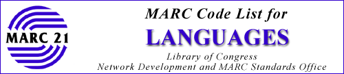

Web Version of the 2003 Edition
This document contains a list of languages and their associated three-character
alphabetic codes. The purpose of this list is to allow the designation of the
language or languages in MARC records. The list contains 457 discrete codes,
of which 55 are used for groups of languages.
- Go to top of document
-
CHANGES IN 2003 EDITION
This list includes all valid codes and code assignments as of February 2003.
There are 24 code additions and 5 changed code captions in this revision.
- Go to top of document
-
STRUCTURE OF THE CODES
The language codes are three-character lowercase alphabetic strings usually
based on the first three letters of the English form or, in some cases, vernacular
of the corresponding language name. The codes are varied where necessary to
resolve conflicts. In the case of modern and older forms of some languages,
the initial letters of each part of the language name are used to form the code,
e.g. gmhfor German, Middle High, and gohfor German, Old
High. When the name of a language is changed in the list, the original code
is generally retained.
- Go to top of document
-
INDIVIDUAL LANGUAGE CODES
This list includes individual codes for most of the major languages of the modern
and ancient world, e.g. Arabic, Chinese, English, Hindi, Latin, Tagalog, etc.
These are the languages that are most frequently represented in the total body
of the world's literature. Additional codes for individual languages are created
from time to time when it becomes apparent that a significant body of literature
in a particular language already exists, or when it is determined that the amount
of material in a language is growing.
Usually only one code is provided for a given language, even if that language
can be written in more than one set of characters. In a few cases however, separate
codes are provided for the same spoken language written in different characters.
Go to top of document
-
LANGUAGE GROUP CODES
In addition to codes for individual languages, the list also contains a number
of codes for language groups. While some individual languages are given their
own unique code, although linguistically they are part of a language group,
many individual languages are assigned a group code, because it is not considered
practical to establish a separate code for each.
Group codes may be recognized by the fact that the name listed in association
with the code does not represent an individual language, and includes either
the generic term "languages" or the expression "(Other)," as opposed to names
of individual languages which do not include these terms. For example:
- myn
- Mayan languages
- nic
- Niger-Kordofanian (Other)
These language group codes are generally established at a very broad level,
e.g. South American Indian (Other) sai. Although some South American
Indian languages have their own unique codes, such as Mapuche arn
and Aymara aym, all other South American Indian languages which have
not been assigned a unique code, such as the Cumana language, are assigned
the group code sai.
Some group codes have been established at an intermediate level when individual
languages and dialects within that group did not warrant discrete codes, yet
it was felt that assignment to one of the very broad group codes was not sufficiently
specific. For example, the Athapascan language group, a subgroup of North
American Indian languages, is given the code ath, and that code rather
than nai, the code for North American Indian (Other), is assigned
to Athapascan languages not having their own codes.
Ancient languages which are not given unique codes are assigned the code
for the major language group to which each belongs, rather than the code for
the modern language which evolved from the ancient language. Thus, the language
Swedish, Old is assigned the code gem for the language group Germanic
(Other) instead of the code swe for the modern language Swedish.
Dialects are normally treated like any individual language entered in the
list, and are generally assigned a group code. However, if a dialect of a
language as well as the language itself is entered in the list, the dialect
is usually assigned the same code as the code for the language. If the language
is assigned a group code, the dialect is assigned the same group code. For
example, Bolinao, a dialect of Sambali, and Sambali language itself are both
assigned phi, the group code for Philippine (Other). If the language
has a unique code, the dialect is also assigned that code rather than the
code for the group to which both belong. For example, Aja, a dialect of Ewe,
is assigned ewe, the code for Ewe. In a few instances, however, both
the language and a dialect of that language have their own unique codes. For
example, Akan has the code aka, and Twi, a dialect of Akan, has the
code twi.
Go to top of document
-
NAMES OF LANGUAGES AND DIALECTS
The form of name of a language used in this code list normally corresponds to
the form of the name appearing in Library of Congress Subject Headings(LCSH), with the exception that names of individual languages in the list generally
do not include the terms "language" or "dialect" and consist of only the substantive
portion of the name. For example:
English (name in code list)
English language (name in LCSH)
LCSH forms of names have not been used for the code list name if they make
use of subdivisions; instead such headings are reformulated into phrase expressions
for this list. This most often occurs in connection with headings for local
dialects:
Morvan French (name in code list)
French Language--Dialects--France--Morvan (name in LCSH)
In addition, names of early forms of modern languages often appear in the
code list in a form different from LCSH which frequently makes use of chronological
subdivisions:
Swedish, Old (to 1550) (name in code list)
Swedish language--To 1550 (name in LCSH)
- Go to top of document
SPECIAL CODES FOR SPECIAL SITUATIONS
In addition to codes for individual languages and language groups, codes are
also provided for three special situations.
- Undetermined [und]
- This code is used if the language associated with an item cannot be determined.
This code is also used for works having textual content consisting of arbitrary
syllables, humming or other human-produced sounds for which a language cannot
be specified.
- Multiple languages [mul]
- This code is used when two or more languages are associated with an item,
and it is not practical to use codes for all of the languages.
- Blanks [###]
- Three blanks are used in place of a language code when the item has no sung,
spoken, or written textual content (e.g. instrumental or electronic music;
sound recordings consisting of nonverbal sounds; audiovisual materials with
no narration, printed titles, or subtitles; machine-readable data files consisting
of machine languages or character codes).
-
-
Go to top of document
ARRANGEMENT OF THE LIST
The list is made up of two basic parts: Part I: Name Sequence, and Part II:
Code Sequence. A description of these two parts follows.
Part I: Name Sequence
In this part, the languages are listed alphabetically by the name. An entry
for an individual language gives the name followed by the code in brackets,
both in boldface. Any variant names of the language are listed on successive
lines, with the first variant preceded by the symbol UF (used for). For example:
- Aramaic [arc]
-
- UF
- Biblical Aramaic
- Chaldean
The entry for an individual language which does not have a unique code, but is
assigned a group code is similar, except that the assigned code with its language
group name is given on the lines following the name. For example:
- Chabacano
-
- Assigned collective code [crp]
- (Creoles and Pidgins (Other))
- UF
- Chavacano
- Zamboangueño
The entry for a language group is also similar to that for an individual language,
with the addition of a list of the individual languages which have been assigned
that group code. This list follows the variant names, if any are given. For
example:
- Creoles and Pidgins (Other) [crp]
-
- UF
- Pidgins
- Collective code for:
- Chabacano
- Fanakalo
- Naga Pidgin
- San Basilio del Palenque Spanish Creole
- Unami jargon
The variant names from each of these entries also appear in their alphabetic
position in the list as references, but not in boldface. For example:
- Bafang
-
- USE
- Fe'fe'
- Chaldean
-
- USE
- Aramaic
These references do not give the code; the entry under the name referred to must
be consulted to determine the code.
Part II: Code Sequence
In this part, the languages and their codes are listed alphabetically by the code.
Only the name of the individual language or language group and the associated
code are given in this part. Tracings or references for variant forms of the language
names are not included. For example:
- arc
- Aramaic
- bai
- Bamileke languages
Languages which are assigned a group code are not included in the code sequence
part. Thus, the language Fe'fe' which is assigned the group code bai
does not appear in this part of the list.
Discontinued codes are also listed in this part in their alphabetical sequence.
They are identified by a hyphen preceding the code. For example:
-ajm
Aljamía
Go to top of document
USE OF LANGUAGE NAMES IN CATALOGING
The names of individual languages which appear in boldface are the form normally
used in uniform titles and notes in bibliographic records. For example:
Homer. Iliad. English. (form in uniform title)
Text in Coptic and French; notes in French. (form in note)
Library of Congress Rule Interpretations 1.7B2 and 25.5C may be consulted
for specific instructions and exceptions.
The individual languages which appear in boldface also usually correspond to
the subject headings for those languages in LCSH. The relationship of language
names in this list to LCSH is described more fully above in the section "Names
of Languages and Dialects."
Go to top of document
MARC 21 FIELDS IN WHICH CODES ARE USED
Language codes are used in the following MARC 21 fields:
Bibliographic records
008/35-37 Fixed-Length Data Elements / Language
040$b Cataloging Source / Language of cataloging
041 Language Code
242$y Translation of Title by Cataloging Agency / Language code of translated
title
775$e Other Edition Entry / Language code
Authority records
040$b Cataloging Source / Language of cataloging
Holdings records
008/22-24 Fixed-Length Data Elements / Language
040$b Record Source / Language of cataloging
Classification records
040$b Cataloging Source / Language of cataloging
084$e Classification Scheme and Edition / Language code
Community Information records
008/12-14 Fixed-Length Data Elements / Language
040$b Cataloging Source / Language of cataloging
041 Language Code
The appropriate format document should be consulted for specific instructions
on the use of language codes in these fields and subfields.
Go to top of document
PUBLICATION BACKGROUND
This list was originally compiled in collaboration with Library of Congress
MARC Pilot Project participants, the National Library of Medicine, the National
Agricultural Library, and the Defense Language Institute. In addition, the language
list of the Center for Applied Linguistics, Library of Congress Subject
Headings (LCSH), and language specialists were consulted. The list was
revised by a committee of the National Information Standards Organization (NISO)
and became an American National Standard in 1987: Codes for the Representation
of Languages for Information Interchange (ANSI Z39.53). In 2000, the list
was further revised to include numerous changes necessary for compatibility
with the ISO 639-2 (Codes for the Representation of Names of Languages Part
2: Alpha-3 Code) standard.
Go to top of document
CODE MAINTENANCE
The Library of Congress is the maintenance agency for this list and for both
ANSI Z39.53 and ISO 639-2. Questions and requests for information about this
list should be sent to the Cataloging Policy and Support Office, Library of
Congress, Washington, D.C. 20540-4305 (e-mail: cpso@loc.gov).
ANSI Z39.53 and ISO 639-2 include only the list of codes and associated language
or language group name (as in Part II of this document).
Requests for new language codes are submitted to the ISO 639-2 maintenance
agency, Library of Congress, (iso639-2@loc.gov)
and balloted by the ISO 639 Joint Advisory Committee. Once approved, they are
added to the ISO 639-2 and MARC lists and are included in ANSI Z39.53 when revised.
Notices describing additions/deletions of code values will be issued for all
changes to the language codes made in the interim period between issuance of
revised versions of this document. Please consult the MARC website (www.loc.gov/marc/)
for these notices.
Go to top of document
RELATED MARC 21 DOCUMENTS
MARC 21 Format for Authority Data
MARC 21 Format for Bibliographic Data
MARC 21 Format for Classification Data
MARC 21 Format for Community Information
MARC 21 Format for Holdings Data
MARC 21 Concise Formats
Go to top of document
OTHER RELATED DOCUMENTS
Codes for the Representation of Languages for Information Interchange
(ANSI Z39.53)
Codes for the Representation of Names of Languages Part 2: Alpha-3 Codes
(ISO 639-2)
Go to top of document
Go to: MARC Code List for Languages
| MARC Home Page
 Library
of Congress
Library
of Congress
Comments: Library
of Congress Help Desk (
05/05/2003
)